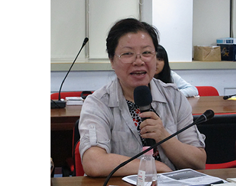

大一會遇見的本系老師
莊道明老師
老師會利用影片和圖片教學，給我們看一些電影拍攝後的說明影片，讓我們了解拍攝後的後製剪輯和加工是如何進行的，也從一些圖片和街頭實驗也告訴我們 〝視覺錯視〞是如何蒙騙了大眾的眼睛，親眼所見不一定是真實的，而在大一下學期教了我們一些關於鏡頭攝影的拍攝角度及技巧，並讓小組討論，期末每個小組都要拍攝一段短片並講解自己的拍攝理念。 我們有時也會去參訪民視等企業或聆聽有經驗的人分享心得。
林頌堅老師
老師在剛開學要求每組拍攝一段短片，也是個認識新同學的好機會，大一上我們學習的是R語言，雖然一開始被成堆的影文字母和數字繞的暈頭轉向，但一陣子後就能 逐漸發現都是有規律的。下學期主要的就是建設自己的網站啦!練習用HTML、JAVA和CSS為自己的網頁添加更多的內容也是很有成就感的，老師人很好，有耐心幫遇到困難的同學 尋找錯誤並講解原因。

林志鳳老師
第一堂課可能會有點被老師的嚴厲嚇到，但之後發現只要遵守老師訂的規定並準時交出作業，其實老師是一個很好的人，上台報告也培養我們組織語言的 能力，這堂課雖然並不輕鬆卻能學到有意義的事，也能聽到老師遊歷的經驗，所學的不只是資訊素養更是對世界的認知及對未來的準備。這是一堂豐富而多元的課程。